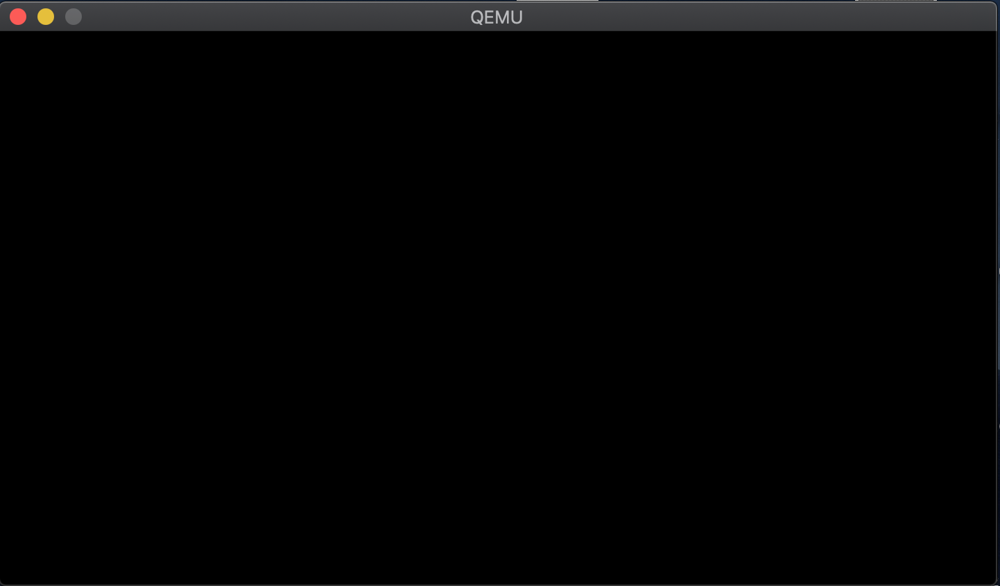
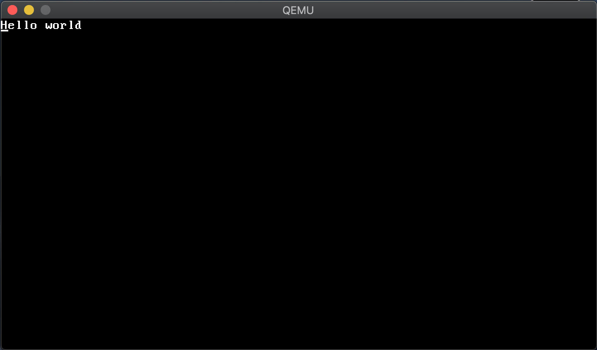

How to write x86 bare-metal hello world in Rust
This is the article for the 15th day of qiita advent calendar.
In this post, I'm going to show you how to write a bare-metal hello-world in Rust (x86). By bare-metal hello-world, I mean the hello-world program which doesn't require any OS and starts directly on your PC from a hard disk or an USB flash drive.
Write a simple no_std program
This is a typical hello-world program in Rust.
fn main() {
println!("Hello world");
}
When you compile this simple program by cargo build, the resulting executable already depends on a lot of components and libraries specific to your OS. In the first place, the program expects your OS to initialize resources and call main() function. The program relies on println!(), which calls system calls to show the characters in your display.
$ cargo build --release
# The executable has a lot of dependencies
$ ldd target/release/helloworld
linux-vdso.so.1 => (0x00007fffee514000)
libdl.so.2 => /lib64/libdl.so.2 (0x00007f3848907000)
librt.so.1 => /lib64/librt.so.1 (0x00007f38486ff000)
libpthread.so.0 => /lib64/libpthread.so.0 (0x00007f38484e3000)
libgcc_s.so.1 => /lib64/libgcc_s.so.1 (0x00007f38482cd000)
libc.so.6 => /lib64/libc.so.6 (0x00007f3847f00000)
/lib64/ld-linux-x86-64.so.2 (0x00007f3848d41000)
A bare-metal program should not depend on anything because it needs to run without OS. Therefore, to write a bare-metal program, we need to tell the compiler to avoid depending on such OS-specific components. To do so, you can use no_std feature of the Rust compiler. Let's write a simple program which uses no_std.
- Create a Rust project.
$ cargo new --bin helloworld
- Then, replace the content of
main.rswith this code.
#![no_std]
#![no_main]
#[panic_handler]
fn panic(__info: &core::panic::PanicInfo) -> ! {
loop {}
}
#![no_std] is to enable no_std feature. With this feature, we can tell the Rust compiler not to include any OS-specific dependencies. At this point, we cannot use println!() anymore because it relies on system calls.
#![no_main] is to tell the Rust compiler not to have extra logic to start from main(). By default, the Rust compiler inserts a piece of code for libc to call main() function. To write a bare-metal program, we don't assume libc, we therefore disable main().
Once you enable no_std feature, you are required to implement panic handler, which defines what to do when a program goes panic. The definition of panic handler starts with the attribute #[panic_handler] in the code above.
Without no_std, the Rust compiler automatically inserts panic handler, which heavily depends on OS-specific features. Therefore, with no_std, the compiler no longer can insert panic handler. We instead need to implement it by ourselves. In this example, we just do nothing.
Cross-compiling
You can see that cargo build no longer can compile the program above. This is because cargo build by default tries to compile the program for your local environment (on your OS). However, the no_std program is too minimal. It eliminates all the shim for the program to run on your OS.
What we need to do next is cross-compiling. Let's compile it for bare-metal environment instead of your local environment. Luciky there's a nice cross-compiler as a cargo subcommand, cargo xbuild. First, let's install it.
$ cargo install cargo-xbuild
Then, let's configure it so that the cross-compiler targets to bare-metal. Save this json as the file helloworld.json in the top directory of the project.
{
"llvm-target": "x86_64-unknown-none",
"data-layout": "e-m:e-i64:64-f80:128-n8:16:32:64-S128",
"arch": "x86_64",
"target-endian": "little",
"target-pointer-width": "64",
"target-c-int-width": "32",
"os": "none",
"executables": true,
"linker-flavor": "ld.lld",
"linker": "rust-lld",
"panic-strategy": "abort",
"disable-redzone": true,
"features": "-mmx,-sse,+soft-float"
}
Then, run.
$ cargo xbuild --release --target helloworld.json
Now the program compiles. You will get the binary under the directory ./target/helloworld/release/helloworld.
Bootloader
Ok, let's run the program on bare-metal. However, we no longer rely on an OS, which means we need to initialize the hardware resources by ourselves. This is a pretty hard job without some knowledge around the early boot stage.
Fortunately, in Rust ecosystem, there's a crate which does the job for you, bootloader.
Clone it in the top directory of the project.
$ git clone https://github.com/rust-osdev/bootloader.git
Currently, your project should be like this.
.
├── bootloader ... `bootloader` which you've cloned right now.
├── Cargo.lock
├── Cargo.toml
├── helloworld.json
└── src
└── main.rs
Then, compile bootloader specifying your helloworld as kernel.
# Go into `bootloader` directory
$ cd bootloader
# Compile it with some environment variables set.
$ KERNEL=../target/helloworld/release/helloworld KERNEL_MANIFEST=../Cargo.toml cargo xbuild --release --features binary
When you compile bootloader, set the two environment variables as follows.
KERNELis the path to yourno_stdprogram binary.KERNEL_MANIFESTis the path to theCargo.tomlof your project.
At this time, you'll see this error. This is expected.
error: failed to run custom build command for `bootloader v0.8.3 (./dev/helloworlds/helloworld/bootloader)`
Caused by:
process didn't exit successfully: `./dev/helloworlds/helloworld/bootloader/target/release/build/bootloader-bcef2fb59a03f870/build-script-build` (exit code: 101)
--- stderr
thread 'main' panicked at 'Kernel executable has an empty text section. Perhaps the entry point was set incorrectly?
Kernel executable at `../target/helloworld/release/helloworld`
', build.rs:163:9
note: run with `RUST_BACKTRACE=1` environment variable to display a backtrace.
The point is executable has an empty text section. After hardware initialization, bootloader tries to call _start() of your no_std program. However, we didn't write such function.
Write an entry point
Let's define _start() in your no_std program. This is the entry point of your program that bootloader is supposed to call.
#![no_std]
#![no_main]
#[no_mangle]
pub extern "C" fn _start() -> ! {
loop {}
}
#[panic_handler]
fn panic(_info: &core::panic::PanicInfo) -> ! {
loop {}
}
Instead of just writing only fn _start(). We have some keywords and attributes around the function name.
#[no_mangle] is to avoid mangling. When bootloader calls _start, it just searchs a symbol _start to find the entry point. However, without #[no_mangle], the Rust compiler applies some special encoding to the symbol, which prevents bootloader from finding it. extern "C" lets the function follows the C calling convention, which bootloader follows.
Compile it again.
# Compile your `no_std` program again.
$ cargo xbuild --release --target helloworld.json
# Then, compile the bootloader again.
$ cd bootloader
$ KERNEL=../target/helloworld/release/helloworld KERNEL_MANIFEST=../Cargo.toml cargo xbuild --release --features binary
Then, you will find the output binary bootloader/target/x86_64-bootloader/release/bootloader (the path from the root of the project).
Run it
The binary bootloader is an ELF file, which actually is not a format that is bootable (loadable) from a hard disk and an USB flash drive. So let's modify a bit by the tool objcopy. Let's install the tool.
$ cargo install cargo-binutils
Then use it.
$ cargo objcopy -- -I elf64-x86-64 -O binary --binary-architecture=i386:x86-64 bootloader/target/x86_64-bootloader/release/bootloader bootloader/target/x86_64-bootloader/release/bootloader.bin
The command converts the binary bootloader to another binary bootloader.bin.
bootloader.bin is exactly the format which is bootable from a disk. If you burn the binary to a USB flash drive, then you can boot it directly on your PC without OS.
Before running on your PC, we can check the behaviour using the emulator, qemu.
$ qemu-system-x86_64 -drive format=raw,file=bootloader/target/x86_64-bootloader/release/bootloader.bin
The command is for the situation where you start a PC with a hard disk whose content is bootloader.bin.
You'll see a black screen. That's actually successful because we didn't do anything in _start().

Print hello world
Let's print something. In _start(), let's write as follows. This code is instructing a video card to print a message Hello world on the screen.
The video card watches the memory region starting from the address 0xb8000. In this mode, the video card can show 80 x 25 characters on the screen.
One character uses two bytes in the memory: the first byte is for an ASCII character to print and the second byte is for its color. The program below
writes characters and colors to the memory region accordingly.
#[no_mangle]
pub extern "C" fn _start() -> ! {
let vga = 0xb8000 as *mut u8;
for (i, b) in b"Hello world".iter().enumerate() {
unsafe {
*vga.offset(i as isize * 2) = *b;
*vga.offset(i as isize * 2 + 1) = 0x0f;
}
}
loop {}
}

Here I put the source code: https://github.com/YushiOMOTE/baremetal-helloworld
Summary
This is about how to write a no_std program which runs on bare-metal. Rust ecosystem nicely helps us travarse some complicated parts (hardware initialization for the very early stage), which often discourages us from starting bare-metal programming. From here, you can dig more to enjoy bare-metal programming in Rust.